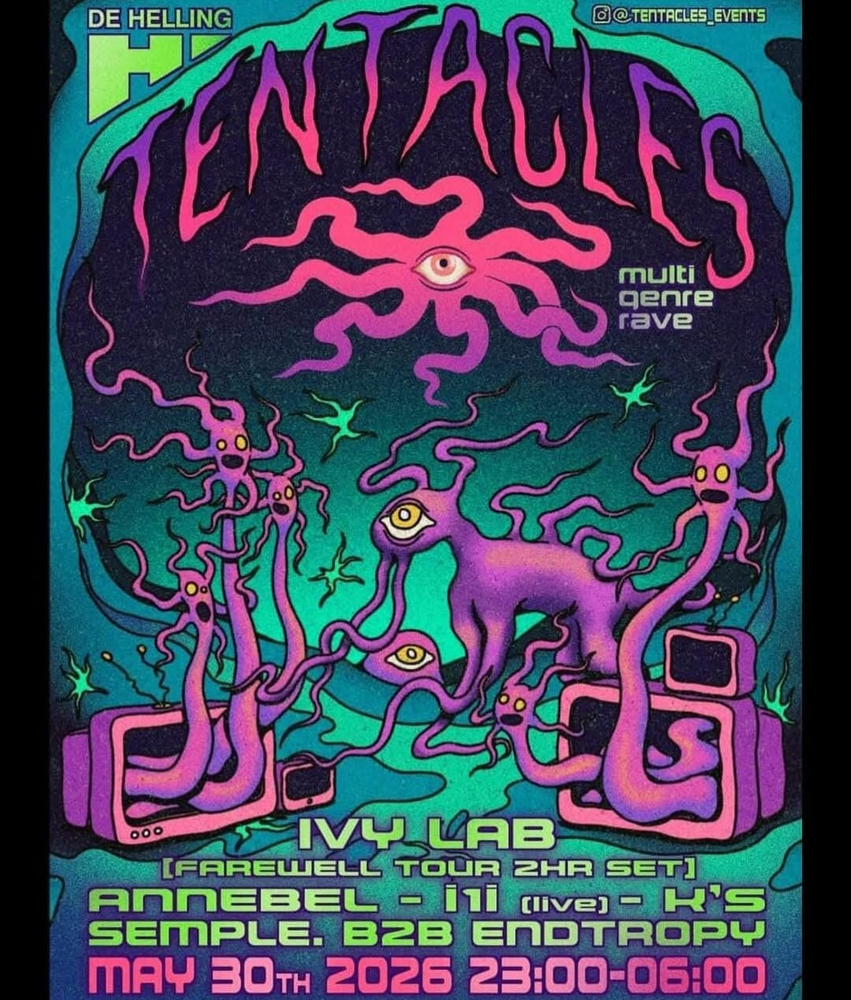

Tentacles
Tentacles is a multi-genre rave at De Helling in Utrecht.
2026

Tentacles
I did the visuals for Ivy Lab’s two-hour farewell-tour set, using a butterfly simulation I built in TouchDesigner. The visuals played on a TV wall built by the Tentacles crew. I also made the announcement video for the night.